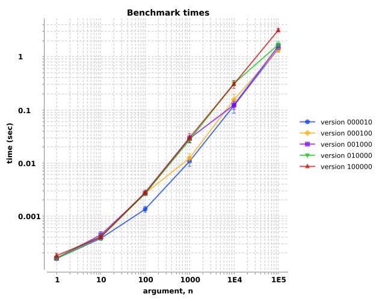

transduce benchmarks vary with different partition sizes?
Observations: Partitions must be significantly smaller than the input vector to realize a performance improvement.
See also:
Benchmarks defined here, similar to before. For exploring the affects of partition size, we'll consider only multi-threaded transduce. We'll test vectors increasing in
length from one element to one-hundred-thousand elements, by powers of ten. For each element, a pre-generated random floating point number, we'll
construct a hashmap of eighteen mathematical operations on that number (trig ops, logarithms, etc.) that the JVM compiler oughtn't be able to optimize.
To amplify the computation requirements, we'll construct variations of that hashmap five times for each element. We'll use the Criterium benchmarking library to measure the execution times of sixty repetitions of each condition.
Benchmarks were run on three explicitly-pinned cores of my antique desktop computer.
Overall, we observe that the execution times increase with increasing vector lengths. The results are relatively indistinguishable when the vector
contains ten or fewer elements. When the partition is exactly the vector's length, the transduction runs exactly as fast as single-threaded
transduce, as expected. Once the vector length exceeds the partition size, we can see performance benefits to the multi-threading. When
the vector length is one-hundred elements or more and when the partition size results in multiple threads, the processing time is roughly twice as
fast.
This test performs the following mathematical operations per element: cube root, ceiling, cosine, cubing,
decrement, natural exponentiation, exponentiation, floor, identity, increment,
logarithm, natural logarithm, multiply by π, negation, round, sine, square-root, and
tangent. For each element, that group of operations was performed five times on jittered values of the elements (i.e., (* 18 5) =>
90 operations per vector element). The partition values are the zero-padded integers following "version" in the chart legend.
For vectors of one or ten elements, none of the partitioning limits are distinguishable, as expected. For the one-hundred element vector, we can see a performance benefit due to the multi-threading when the the vector is partitioned into chunks of about ten (blue circles). For the one-thousand element vectors, partitions of ten or one hundred chunks (gold diamonds) provide performance improvements (i.e., shorter times). This pattern continues: when the vector is partitioned into about ten chunks, we observed a factor of two performance improvement.
Notice that the performance improves when the partition size is one decade smaller than the vector length.
| vector length | best | worst | factor | chunk size at improvement |
|---|---|---|---|---|
| 100 | 1.4E-3 | 2.7E-3 | 1.9× | 10 |
| 1000 | 1.1E-2 | 2.9E-2 | 2.6× | 10–100 |
| 10000 | 1.3E-1 | 3.2E-1 | 2.5× | 100–1000 |
| 100000 | 1.6E0 | 2.9E0 | 1.8× | 100–10000 |
Note that a one-hundred-thousand partition chunk (red triangles) is as large as the largest tested vector. Therefore, red triangles represent no
chunking for any vector length tested, and the performance is what we would observe with single-threaded transduce.

| arg, n | ||||||
|---|---|---|---|---|---|---|
| version | 1 | 10 | 100 | 1000 | 10000 | 100000 |
| 000010 | 1.6e-04±7.8e-06 | 3.7e-04±2.2e-05 | 1.3e-03±1.7e-04 | 1.1e-02±2.0e-03 | 1.2e-01±3.3e-02 | 1.4e+00±2.0e-01 |
| 000100 | 1.6e-04±7.4e-06 | 4.0e-04±5.6e-05 | 2.6e-03±2.1e-04 | 1.2e-02±2.5e-03 | 1.5e-01±4.1e-02 | 1.3e+00±9.4e-02 |
| 001000 | 1.6e-04±9.1e-06 | 4.4e-04±6.9e-05 | 2.6e-03±2.0e-04 | 2.9e-02±4.2e-03 | 1.2e-01±2.1e-02 | 1.6e+00±2.1e-01 |
| 010000 | 1.6e-04±8.3e-06 | 4.0e-04±5.4e-05 | 2.6e-03±2.0e-04 | 2.7e-02±3.1e-03 | 3.1e-01±3.0e-02 | 1.7e+00±2.4e-01 |
| 100000 | 1.8e-04±1.9e-05 | 4.0e-04±2.5e-05 | 2.7e-03±2.7e-04 | 3.0e-02±5.9e-03 | 3.0e-01±5.2e-02 | 3.1e+00±2.2e-01 |